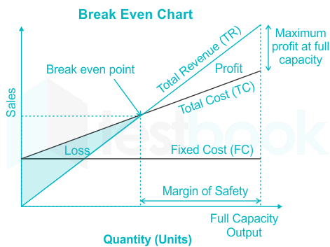
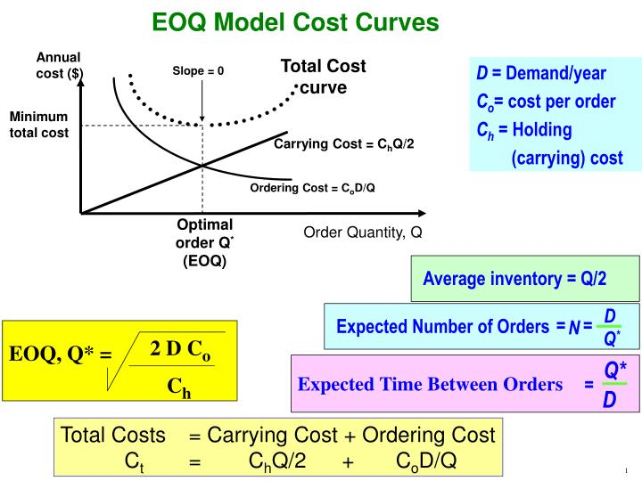
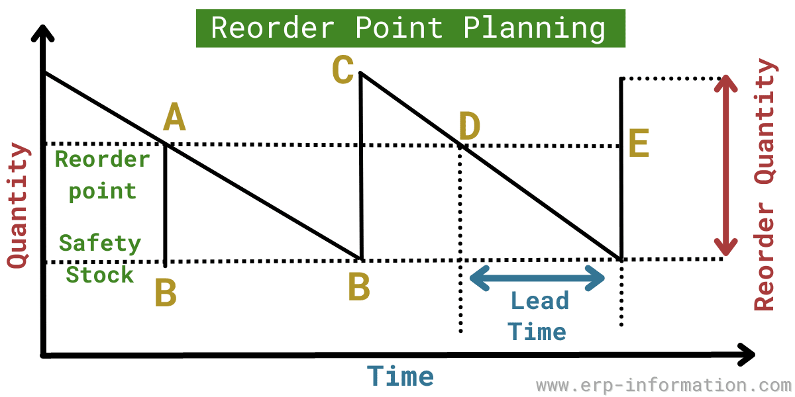
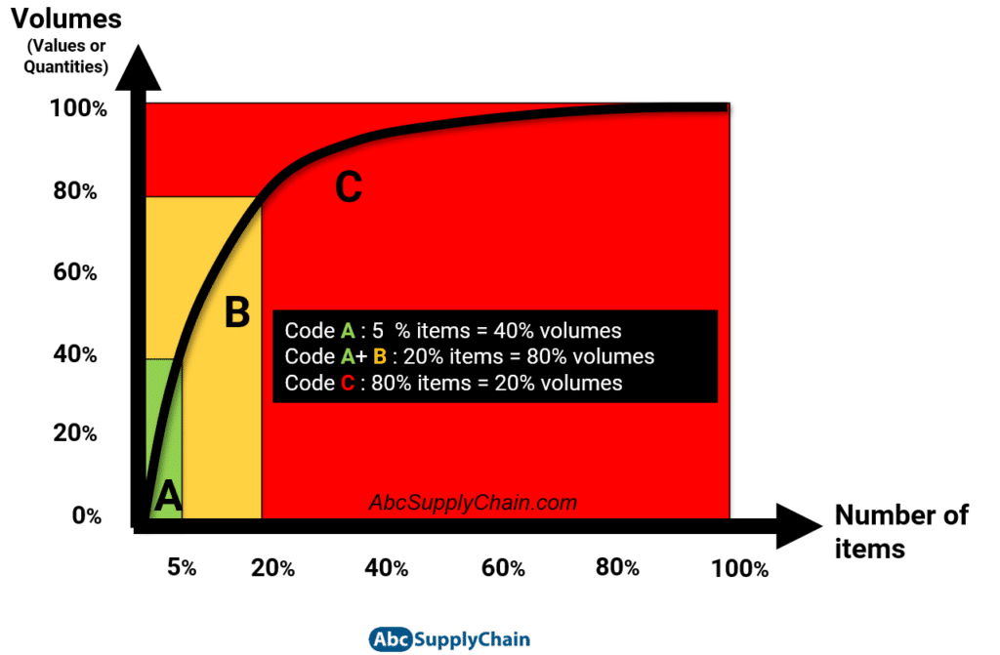

☀️
🏭 Industrial Engg:
[Hub Home]
1. PPC
2. Work Study
3. Line Balance
4. CPM/PERT
5. LPP/Simplex
6. Quality Control
7. BEP/EOQ/Forecast
BREAK-EVEN, FORECASTING & INVENTORY
High-frequency topics: Break-even Point $\text{BEP} = \frac{FC}{P-VC}$, Economic Order Quantity $\text{EOQ} = \sqrt{\frac{2DS}{h}}$, Reorder Point $\text{ROP}$, Exponential Smoothing, ABC/VED inventory classification.
1. Core Concepts & Definitions
1.1 Break-even Analysis (Cost-Volume-Profit)
Break-even Point (BEP) = Output level where Total Revenue = Total Cost

Figure 1.1: Cost-Volume-Profit Break-even Chart — Fixed Costs, Variable Costs, Total Revenue, & Margin of Safety.
1.2 Indifference Point (Multi-Product/Make-vs-Buy)
Indifference Point = Quantity where two alternatives have equal cost
1.3 Economic Order Quantity (EOQ) — Most-Tested Inventory Concept
EOQ = Optimal order quantity minimizing total inventory cost

Figure 1.2: Inventory Cost Trade-off Curves — Holding Cost, Ordering Cost, & Minimum Total Cost at EOQ.
1.4 Reorder Point (ROP) & Safety Stock
Reorder Point (ROP) = When to place new order to avoid stockout

Figure 1.3: Sawtooth Inventory Cycle — Order Quantity ($Q$), Reorder Point ($\text{ROP}$), Lead Time ($L$), & Safety Stock Buffer ($SS$).
1.5 Inventory Classification (ABC/VED/FSN)
ABC Classification (Usage-value based):

Figure 1.4: ABC Classification Pareto Curve — Category A ($20\%$ items, $80\%$ value), Category B ($30\%$ items, $15\%$ value), & Category C ($50\%$ items, $5\%$ value).
1.6 Forecasting Methods & Horizons
Forecasting = Estimate future demand based on historical/market data
2. Essential Formulas & Principles
2.1 Break-even Point in Units & Revenue
$$\text{BEP (units)} = \frac{FC}{P - VC}$$
Where: $FC$ = Fixed Costs, $P$ = Selling price per unit, $VC$ = Variable cost per unit. $(P - VC)$ = Contribution margin per unit.
$$\text{BEP (revenue)} = \frac{FC}{\text{Contribution Margin Ratio}} = \frac{FC}{\frac{P - VC}{P}}$$
2.2 Economic Order Quantity (EOQ) Formula
$$\text{EOQ} = \sqrt{\frac{2DS}{h}}$$
Where: $D$ = Annual demand (units), $S$ = Cost per order, $h$ = Holding cost per unit per year. Minimizes total inventory cost. Ordering frequency = $D / \text{EOQ}$.
2.3 Total Relevant Inventory Cost
$$TC = \frac{Q}{2} \times h + \frac{D}{Q} \times S$$
At EOQ ($Q = \sqrt{2DS/h}$), holding cost equals ordering cost: $TC_{\min} = \sqrt{2DS \times h}$.
2.4 Reorder Point Formula
$$\text{ROP} = d_L \times L + SS$$
Where: $d_L$ = Average daily demand, $L$ = Lead time (days), $SS$ = Safety stock.
2.5 Forecasting Error Measures
Mean Absolute Deviation (MAD):
2.6 Exponential Smoothing
$$F_{t+1} = \alpha \cdot A_t + (1 - \alpha) \cdot F_t$$
Where: $F_{t+1}$ = Forecast for next period, $A_t$ = Actual demand this period, $F_t$ = Previous forecast, $\alpha$ = Smoothing factor ($0.1\text{--}0.3$ typical; higher = more responsive).
3. Methods & Application Classification
3.1 Concept & Purpose Matrix
Concept
Purpose / Use
Formula / Method
Exam Note
Break-even Point Find quantity where Profit = 0; minimum sales for feasibility
$\text{BEP} = \frac{FC}{P - VC}$
VERY FREQUENTLY TESTED
Contribution Margin Revenue available after variable costs; funds fixed costs & profit
$CM = P - VC$; $CM\text{ ratio} = \frac{P-VC}{P}$
Higher CM% = lower BEP = faster breakeven
Indifference Point Quantity where two cost alternatives equal
$Cost_A = Cost_B$; solve for Q
Make-vs-Buy or process selection decisions
Economic Order Quantity Optimal order size balancing holding & ordering costs
$\text{EOQ} = \sqrt{\frac{2DS}{h}}$
MOST TESTED inventory formula
Reorder Point When to place order to avoid stockout during lead time
$\text{ROP} = d_L \times L + SS$
Depends on demand, lead time, service level
Safety Stock Buffer against demand/supply variability
$SS$ based on service level & std dev
Higher service level = higher SS = higher cost
3.2 Forecasting Methods Comparison
Method
Type
Best For
Accuracy
Exam Note
Moving Average Quantitative (time series)
Stable demand with minor fluctuations
Good; lags trends
Simple; assigns equal weight to past periods
Exponential Smoothing Quantitative (time series)
Trending or seasonal demand
Very good; responsive
FREQUENTLY TESTED ; weights recent heavily ($\alpha$)
Regression/Trend Quantitative (causal)
Linear trend; known causal factors
Good if relationship stable
Requires external variable data
Delphi Method Qualitative (expert judgment)
New products, market disruption, long-term
Moderate; group consensus
Iterative expert panel; slow but insightful
Seasonal Decomposition Quantitative (time series)
Demand with clear seasonal pattern
Very good for seasonal products
Separate trend, seasonal, cyclic components
3.3 Inventory Cost Components & Trade-offs
Cost Type
Formula / Behavior
Impact on Q
Holding Cost $h$ per unit/year; increases with $Q$
Higher $h$ → Lower EOQ (order more frequently)
Ordering Cost $S$ per order; decreases as $Q$ increases ($D/Q$ term)
Higher $S$ → Higher EOQ (order larger quantities)
Stockout Cost Lost sales or backorder cost if demand > inventory
Higher stockout cost → Higher safety stock
Purchase Cost Unit cost × Demand; often ignored if price independent of $Q$
Relevant only if bulk discounts available
4. Key Points to Remember
Break-even point: $\text{BEP} = \frac{FC}{P - VC}$. CRITICAL exam formula. Units where Total Revenue = Total Cost.Contribution margin ($P - VC$) must cover fixed costs before profit starts. Higher CM ratio → Lower BEP → Faster profitability.Indifference point: Set $\text{Cost}_A = \text{Cost}_B$, solve for $Q$. Used in make-vs-buy and process selection decisions.EOQ = $\sqrt{\frac{2DS}{h}}$ minimizes total inventory cost. MOST TESTED inventory formula. Balances holding and ordering costs.At EOQ, annual holding cost equals annual ordering cost. Equal balance point; any deviation increases total cost.Reorder Point (ROP) = Average demand × Lead time + Safety stock. When to place order to avoid stockout during lead time.Safety stock increases with service level and demand variability. Higher service level (95% vs 99%) = higher SS = higher cost.ABC classification: A items (20% items, 80% value) get strict control; C items (50% items, 5% value) get loose control.VED classification by criticality: Vital items controlled tightly regardless of cost. Desirable items have loose control even if expensive.Forecasting time horizon determines method: Short-term (MA, exponential smoothing); Long-term (Delphi, market research).Exponential smoothing: $F_{t+1} = \alpha A_t + (1-\alpha)F_t$. FREQUENTLY TESTED. Higher $\alpha$ = more responsive to recent demand; lower $\alpha$ = smoother.Forecast error metrics: MAD (average deviation), MSE (squared errors), MAPE (% error). Lower values = better forecast accuracy.Increasing demand $D$ increases EOQ. Increasing holding cost $h$ decreases EOQ.Bulk discount trade-off: EOQ may not be optimal if unit cost decreases with quantity. Compare total cost at discount threshold vs standard EOQ.Just-In-Time (JIT) minimizes inventory but requires reliable suppliers and close coordination. Opposite of EOQ approach (single large order) = many small orders with low safety stock.
Revision Focus Areas (Frequency-Ranked):